数千万人关注的机器人大赛，究竟谁的人气最高？
▼▼▼
RoboMaster机器人大赛
5月12-14号、5月19-21号，一大波机器人将要进击北京/广州/成都/上海。但是，这不是惊悚科幻片，而是一年一度将要举办的RoboMaster机器人大赛！数千万人关注的机器人大赛，究竟谁的人气最高？
这是由共青团中央、全国学联、深圳市人民政府联合主办，大疆创新承办的赛事，全球领先的机器人项目！每年都吸引了海内外上数百支队伍、数万人参赛，其中不乏有西雅图华盛顿大学、新加坡南洋理工大学、香港科技大学、清华大学等知名高校。
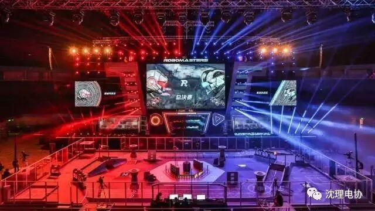
去年总决赛现场通过网易、熊猫、斗鱼等13个平台全球同步直播，吸引近千万观众观看。每年砸好几千万打造的比赛，怎么都有点不一样。比方说拉风的舞美、导播，还有解说。
这个比赛和NBA、F1方程式一样，高达数百万的总奖金，一个大学还只能有一支机器人代表队。不过不同的是，比赛里充满了科技感，什么神符系统、全新机器人和人工智能元素，就连相隔了半个地球远的老美记者们都忍不住来中国一探究竟！
这几天，全国各地的媒体嘉宾就要来观看比赛了~各位进场的粉丝观众们，还不快来恶补比赛规则，万一不小心被央视相中了美貌，点名要你回答问题呢？
规则玩法
比赛阵容像现实版的电竞游戏：有红蓝双方，分别有7个机器人，双方操控机器人发射大小两种弹丸攻击敌方。机器人身上有血条，被攻击时血条会掉血，血掉光了就死掉不能动啦~

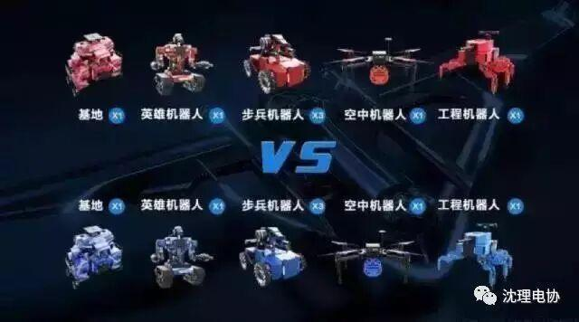
在7分钟内，谁的基地机器人血量少则输，若一样血量，则对比机器人的总血量分胜负。刺不刺激！
灵魂操作手
操作手在一间宛如超豪华网吧的操作间里操控机器人，只能从电脑屏幕中看到机器人的第一视角，无法直接看到比赛场地。

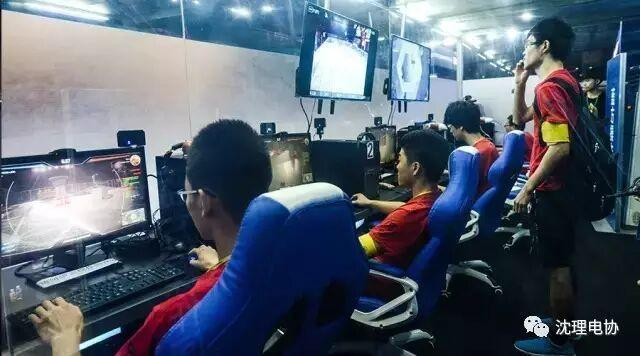

所以不要再用上帝视角骂第一视角玩家了啊！观众们看得到，但是他们看不到啊( ；´Д｀)...
而空中机器人（无人机）的操作手比较特别，可以隔着一层磨砂玻璃看到场地。为什么是磨砂玻璃？后面你就知道了。
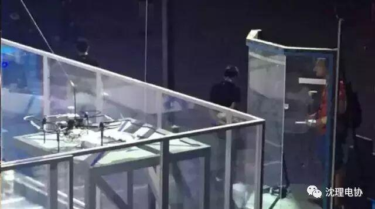
无人机操作间
神符立柱
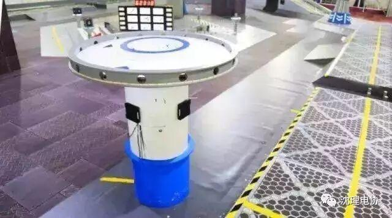
无人机在比赛开始1分钟后才允许起飞，如果能将它准确地停在神符立柱中间，不仅可以捡到立柱上的大弹丸，而且10秒后，全队除了基地，会开始疯狂回血！
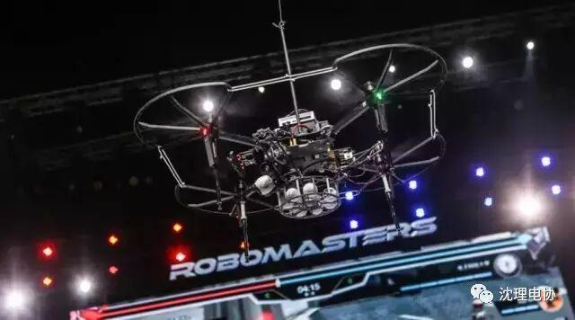
有时，四轴飞行器真的是比三岁小孩还不听话，稍微有点湍流扰动就乱跑，精度又差速度又慢。
然鹅！被马赛克蒙蔽双眼的操作手根本无法将无人机准确停在立柱上，无人机要想停得准就必须有视觉识别技术。
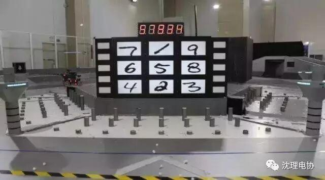
今年的大神符激活方式比较厉（bian）害（tai），需要按照LED灯显示的数字顺序，击打下方屏幕上的数字。而屏幕上的数字变化每1.5秒变换一次，若1.5秒内没打中，则LED灯的数字就会刷新。
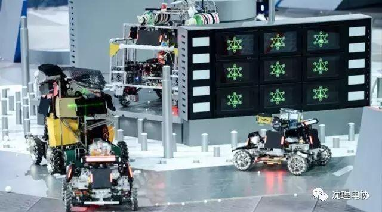
在短短的1.5秒内，要先识别左右指示灯，再识别上方数码管，再识别手写体数字，然后控制云台锁死目标，控制发射机构准确射出弹丸...算了，不忍心说下去了...那个奶奶 尴尬暖暖暖暖暖暖暖暖暖暖暖暖暖暖暖暖暖暖暖暖暖暖暖暖暖暖暖暖暖
等选手们成功识别大神符后，立马就可以去识别12306验证码发家致富了！（╯－＿－）╯╧╧
▼▼▼
更多有（ke）趣（bo）的规定
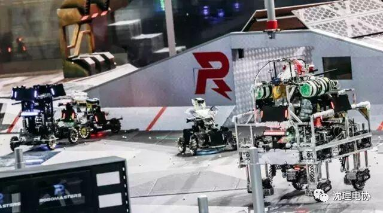
限制功率：机器人碰撞，扣血！翻车，扣血！线松了，扣血！超功率，扣血！超射速，扣血！每走一步都要小心翼翼，感觉随时随地都要死掉了！
地形复杂：这么多加技能的神符和立柱，你以为想去哪就去哪吗？天！真！场地到处都是45度坡、沟壑和90度悬崖。限制了功率的机器人超难冲上坡，英雄机器人也常常在这里翻车。
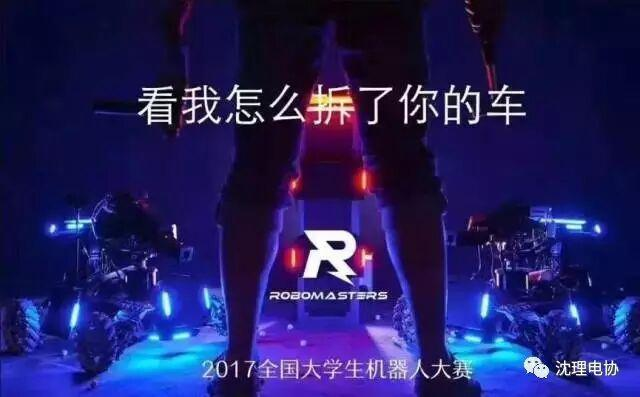
地形复杂：这么多加技能的神符和立柱，你以为想去哪就去哪吗？天！真！场地到处都是45度坡、沟壑和90度悬崖。限制了功率的机器人超难冲上坡，英雄机器人也常常在这里翻车。
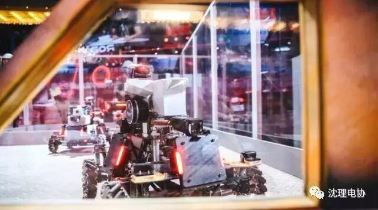
2016赛季步兵机器人
▼▼▼
不错，继续说下去
为了让同学们“玩物丧志”，全球的高校们竟然斥巨资组建了一支机器人战队纷纷去参加这个比赛！
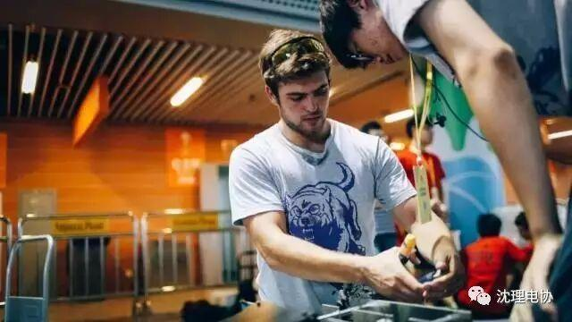
这么棒棒的机器人战队只可远观不可亵玩？错！震惊部刚发了新闻：震惊！网易新闻客户端竟能偷窥各大学偶像天团（参赛战队）私生活？
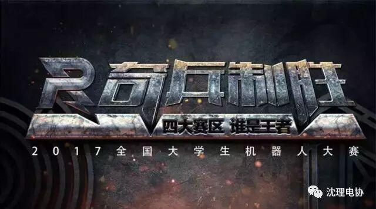


公众号
sylgdzxh


本文、图来源于网络，如有侵权联系我们删除